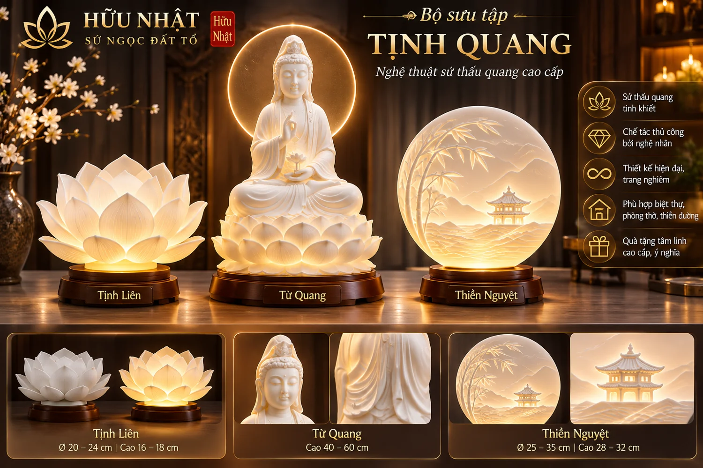
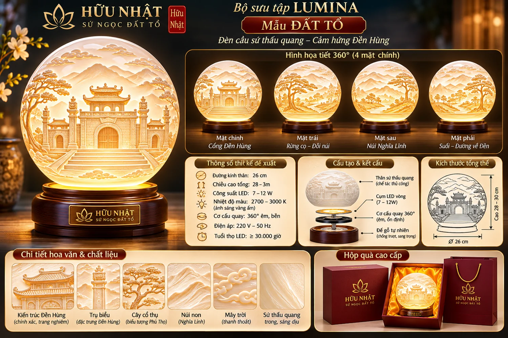
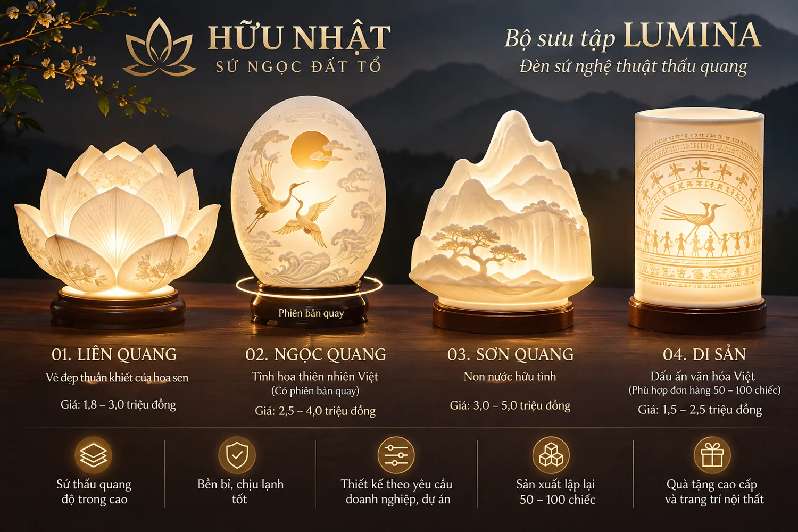

Có hình ý tưởng AI
TỊNH QUANG
Thiền định và ánh sáng
Màu đề xuất: Trắng ngọc · xanh ngọc · ngà kem
Mỗi bộ sưu tập mang một câu chuyện và bảng màu riêng, thống nhất trên nền sứ trắng ngọc thấu quang. Đây là quy hoạch ý tưởng; không phải catalogue hàng có sẵn.

Thiền định và ánh sáng
Màu đề xuất: Trắng ngọc · xanh ngọc · ngà kem

Cội nguồn Phú Thọ
Màu đề xuất: Ngà kem · xanh đá · nâu gốm

Ánh sáng đương đại
Màu đề xuất: Trắng ngọc · bạc ấm · champagne
Vẻ đẹp hoa Việt
Màu đề xuất: Trắng ngọc · tím khói · hồng phấn
Điêu khắc mây, núi, nước
Màu đề xuất: Trắng ngọc · xanh ngọc · lam nhạt
Quà tặng văn hóa
Màu đề xuất: Trắng ngọc · vàng champagne · đỏ gụ
Biểu tượng và tinh thần Việt
Màu đề xuất: Trắng ngọc · vàng cổ · đỏ gụ
Các hình ảnh và bảng màu mang tính định hướng. Từng mẫu phải được nghệ nhân đánh giá khả năng tạo khuôn, nung, lắp ghép và chiếu sáng; các màu men cần thử trên sứ thực tế.
Xem 3 sản phẩm ưu tiên